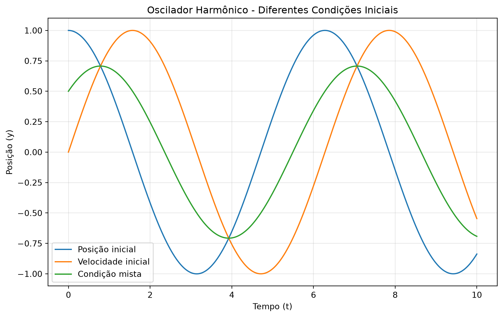
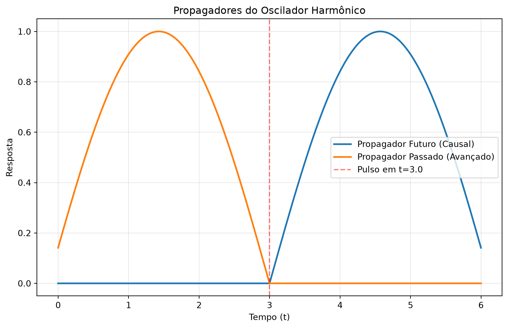

Propagadores Dependentes do Tempo e Estrutura Simplética
Author
Sandro Vitenti
1 Introdução
Nesta aula, exploramos os propagadores dependentes do tempo e a estrutura simplética subjacente às equações diferenciais de segunda ordem. O objetivo é desenvolver uma formulação que unifique o tratamento de soluções linearmente independentes e que prepare o terreno para a quantização de campos.
1.1 Objetivos da Aula
Revisitar a formulação simplética para equações de segunda ordem
Construir soluções complexificadas e entender sua relação com a propagação temporal
Analisar as propriedades de transformação sob reversão temporal
Compreender a conexão com a física de partículas e o conceito de antipartículas
2 Formulação Simplética
2.1 Estrutura da Equação
Consideramos uma equação de segunda ordem na forma: \[ y'' + p_1(x) y' + p_0(x) y = 0 \] que pode ser reescrita no espaço de fase como: \[ \begin{pmatrix} y' \\ q' \end{pmatrix} = \begin{pmatrix} 0 & 1/m \\ -m\omega^2 & 0 \end{pmatrix} \begin{pmatrix} y \\ q \end{pmatrix} \] onde \(q = m y'\) é o momento canônico.
Definimos o vetor de estado: \[ V = \begin{pmatrix} y \\ q \end{pmatrix} \]
2.2 Matriz Simplética
A estrutura simplética é codificada pela matriz: \[ \Omega = \begin{pmatrix} 0 & 1 \\ -1 & 0 \end{pmatrix} \] Esta matriz é antissimétrica (\(\Omega^T = -\Omega\)) e desempenha um papel fundamental na definição do Wronskiano conservado.
O Wronskiano de duas soluções \(V_1\) e \(V_2\) é dado por:
\[ W(V_1, V_2) = V_1^T \Omega V_2 \]
e é uma constante do movimento (conservado).
2.3 Hamiltonianos e Propriedades
O Hamiltoniano associado é: \[ H = \begin{pmatrix} m\omega^2 & 0 \\ 0 & 1/m \end{pmatrix} \] A equação de movimento pode ser escrita como: \[ V' = \Omega H V \]
3 Soluções Linearmente Independentes
3.1 Base no Espaço de Soluções
Para duas soluções linearmente independentes \(V_1\) e \(V_2\), temos: \[ V_1^T \Omega V_2 = \text{constante} \] Podemos normalizar convenientemente: \[ V_1^T \Omega V_2 = \frac{1}{2} \]
3.2 Solução Geral
Qualquer solução \(U\) pode ser escrita como combinação linear: \[ U = \alpha_1 V_1 + \alpha_2 V_2 \] Os coeficientes \(\alpha_i\) são constantes e podem ser obtidos via: \[ \alpha_1 = 2 (V_1^T \Omega U), \quad \alpha_2 = -2 (V_2^T \Omega U) \]
4 Complexificação do Espaço de Soluções
4.1 Construção da Solução Complexa
Definimos a solução complexificada: \[ V = V_1 + i V_2 \] Esta solução satisfaz a mesma equação diferencial no espaço complexo: \[ V' = \Omega H V \]
4.2 Produto Simplético Hermitiano
Introduzimos o produto: \[ \langle V, U \rangle = -i V^\dagger \Omega U \] onde \(V^\dagger = (V^*)^T\) é o conjugado Hermitiano.
Para soluções com normalização \(V_1^T\Omega V_2 = 1/2\), temos:
\[ \langle V, V \rangle = 1 \]
4.3 Subespaços de Norma Positiva e Negativa
O espaço complexificado \(C^2\) se decompõe em dois subespaços:
Norma positiva: \(\langle V, V \rangle = 1\)
Norma negativa: \(\langle V, V \rangle = -1\)
Esta estrutura é análoga à que aparece na mecânica quântica relativística, onde soluções de energia positiva e negativa correspondem a partículas e antipartículas.
5 Propagação no Tempo
5.1 Função de Green (Solução Futura)
Consideramos uma solução com interação instantânea em \(x_0\): \[ U(x) = \Theta(x - x_0) [\alpha V(x) + \alpha^* V^*(x)] \] onde \(V\) é a solução complexa. Esta solução satisfaz: \[ U' - \Omega H U = \delta(x - x_0) U_0 \]
5.2 Solução Passada (Avançada)
A solução que propaga informações do futuro para o passado é: \[ U(x) = \Theta(x_0 - x) [\alpha V(x) + \alpha^* V^*(x)] \] satisfazendo: \[ U' - \Omega H U = -\delta(x - x_0) U_0 \]
A diferença de sinal entre as soluções futura e passada é fundamental para a construção de propagadores em teoria quântica de campos.
6 Simetria de Reversão Temporal
6.1 Transformação das Componentes
Sob reversão temporal \(x \to -x\), o vetor \(V\) se transforma como: \[ V_R(x_R) = T V(x), \quad x_R = -x \] com: \[ T = \begin{pmatrix} 1 & 0 \\ 0 & -1 \end{pmatrix} \]
6.2 Comportamento da Equação
A equação de movimento é invariante sob reversão temporal se: \[ T H(x) T = H(-x) \]
A invariância por reversão temporal leva à relação entre soluções futuras e passadas, fundamental para a construção de operadores de criação e aniquilação.
7 Visualização Computacional
7.1 Propagador do Oscilador Harmônico
Code
import numpy as npimport matplotlib.pyplot as pltfrom scipy.integrate import solve_ivp# Definindo o oscilador harmônicodef harmonic_oscillator(t, y, omega=1.0):return [y[1], -(omega**2) * y[0]]# Configuração do problemaomega =1.0t_span = (0, 10)t_eval = np.linspace(0, 10, 1000)# Solução para diferentes condições iniciaisconditions = [ (1.0, 0.0, "Posição inicial"), (0.0, 1.0, "Velocidade inicial"), (0.5, 0.5, "Condição mista"),]plt.figure(figsize=(10, 6))for y0, v0, label in conditions: sol = solve_ivp(harmonic_oscillator, t_span, [y0, v0], t_eval=t_eval, args=(omega,)) plt.plot(sol.t, sol.y[0], label=label)plt.xlabel("Tempo (t)")plt.ylabel("Posição (y)")plt.title("Oscilador Harmônico - Diferentes Condições Iniciais")plt.grid(True, alpha=0.3)plt.legend()plt.show()

7.2 Propagadores Futuro e Passado
Code
# Simulação de um pulso instantâneo (função de Green)def green_function_solution(t, t0=3.0, amplitude=1.0, omega=1.0):"""Solução futura (causal) com pulso em t0""" y = np.zeros_like(t)for i, ti inenumerate(t):if ti >= t0: y[i] = amplitude * np.sin(omega * (ti - t0)) / omegareturn ydef green_function_advanced(t, t0=3.0, amplitude=1.0, omega=1.0):"""Solução passada (avançada) com pulso em t0""" y = np.zeros_like(t)for i, ti inenumerate(t):if ti <= t0: y[i] = amplitude * np.sin(omega * (t0 - ti)) / omegareturn yt = np.linspace(0, 6, 1000)t0 =3.0plt.figure(figsize=(10, 6))plt.plot( t, green_function_solution(t, t0), label="Propagador Futuro (Causal)", linewidth=2)plt.plot( t, green_function_advanced(t, t0), label="Propagador Passado (Avançado)", linewidth=2,)plt.axvline(x=t0, color="red", linestyle="--", alpha=0.5, label=f"Pulso em t={t0}")plt.xlabel("Tempo (t)")plt.ylabel("Resposta")plt.title("Propagadores do Oscilador Harmônico")plt.grid(True, alpha=0.3)plt.legend()plt.show()

8 Resumo dos Conceitos
Conceito
Descrição
Aplicação
Matriz Simplética (\(\Omega\))
Codifica a estrutura simplética do espaço de fase
Wronskiano conservado
Solução Complexa (\(V\))
Combinação \(V_1 + iV_2\)
Unifica duas soluções independentes
Produto Hermitiano
\(\langle V,U \rangle = -iV^\dagger\Omega U\)
Define norma e ortogonalidade
Norma Positiva/Negativa
\(\langle V,V\rangle = \pm 1\)
Partículas/Antipartículas
Prop. Futuro (Causal)
\(\Theta(x-x_0)\)
Propagação para frente no tempo
Prop. Passado (Avançado)
\(\Theta(x_0-x)\)
Propagação para trás no tempo
Reversão Temporal
\(T = \text{diag}(1,-1)\)
Simetria fundamental
9 Exercícios
9.1 Conceitos Fundamentais
Wronskiano e Independência Linear
Mostre que o Wronskiano \(W(V_1,V_2) = V_1^T\Omega V_2\) é constante para soluções da equação \(V' = \Omega H V\).
Verifique que \(W(V_1,V_1) = 0\) usando a propriedade de antissimetria de \(\Omega\).
Normalização de Soluções
Dada a normalização \(V_1^T\Omega V_2 = 1/2\), expresse a solução geral \(U\) em termos de \(V_1\) e \(V_2\).
Calcule os coeficientes \(\alpha_1\) e \(\alpha_2\) para uma condição inicial genérica.
Complexificação (Essencial)
Verifique que \(V = V_1 + iV_2\) satisfaz a mesma equação diferencial.
Calcule \(\langle V, V \rangle = -iV^\dagger\Omega V\) e mostre que é igual a 1.